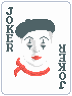
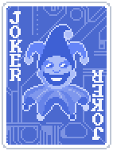

How close is the run?
Estimate Baron and Mime scaling without crashing into JavaScript infinity. The math uses base-10 logarithms, so the app can compare huge scores against the naneinf neighborhood.
This is a planning calculator, not a full Balatro engine. It focuses on hand size, kings in hand, Baron copies, Mime retriggers, steel cards, Blueprint, Brainstorm, DNA, Burglar, and The Serpent.





Run Setup
Joker Order
Blueprint copies the joker to its right. Brainstorm copies the leftmost joker. Move cards to test the order. If Burglar is present, the app assumes every copy joker copied Burglar at blind start before you rearranged for scoring.
Score Readout
What The App Counts
Baron-style scoring is modeled as repeated x1.5 multipliers from kings held in hand. Steel kings add more x1.5 triggers, and Mime-style retriggers repeat held-card effects. DNA and Burglar estimate how many extra kings you could build during a Serpent blind.